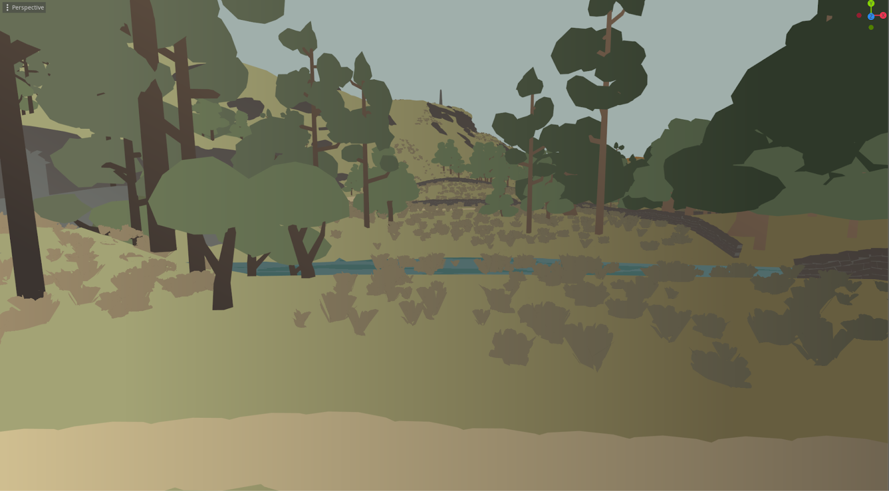

Purgatory


My Work on the Project
About the Project
Purgatory was a game created for a university module where I could create a project of my own specification.
I chose to create a small atmospheric, interactive experience set in a strange and barren landscape inspired by the works of Gerard Trignac, and architectural spaces of Fumito Ueda and Team Ico. Throughout this process I handled every aspect of development. It was largely a good learning experience for working under tight deadlines as my other classes during that term took up the majority of my time, and additionally, the project taught me what methods are effective for creating atmospheric environments.
- Initial concept and design, mostly focused on environment, atmospheric and thematic concepting.
- Designing the level layout, and implementing the layout in-engine.
- Creating highly modular low-poly assets to create the environment.
- Programming player controls, dynamic audio.
- Miscellaneous: Implementing particles, managing source control, and planning.
About the Project
Purgatory was a game created for a university module where I could create a project of my own specification.
I chose to create a small atmospheric, interactive experience set in a strange and barren landscape inspired by the works of Gerard Trignac, and architectural spaces of Fumito Ueda and Team Ico. Throughout this process I handled every aspect of development. It was largely a good learning experience for working under tight deadlines as my other classes during that term took up the majority of my time, and additionally, the project taught me what methods are effective for creating atmospheric environments.